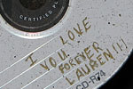

Dr. Daley
Graduated cubicle
|
I just graduated college, and lately I’ve been feeling like my whole world is coming apart. My job sucks, money is an issue, and I feel like the people I once considered my best friends aren’t who I thought they were…


In love and war
|
Should I PhDump her?
|
A vestal interest
|
Strap this on for size
|
Queer as mud
|
 I have a serious problem. I’ve always had trouble picking boyfriends. Every single guy I date winds up eventually coming out. It’s to the point where I’m starting to get a reputation with my friends. Is there even a way to tell if I guy I date is gay?
I have a serious problem. I’ve always had trouble picking boyfriends. Every single guy I date winds up eventually coming out. It’s to the point where I’m starting to get a reputation with my friends. Is there even a way to tell if I guy I date is gay?
Long-distance tolls
|

I’m a 23-year-old guy who has only been in two serious relationships, both of which were long distance. In the most recent one, the girl dumped me the day I moved back home to be with her…
He’s a real slow-poke
|


Recent comments